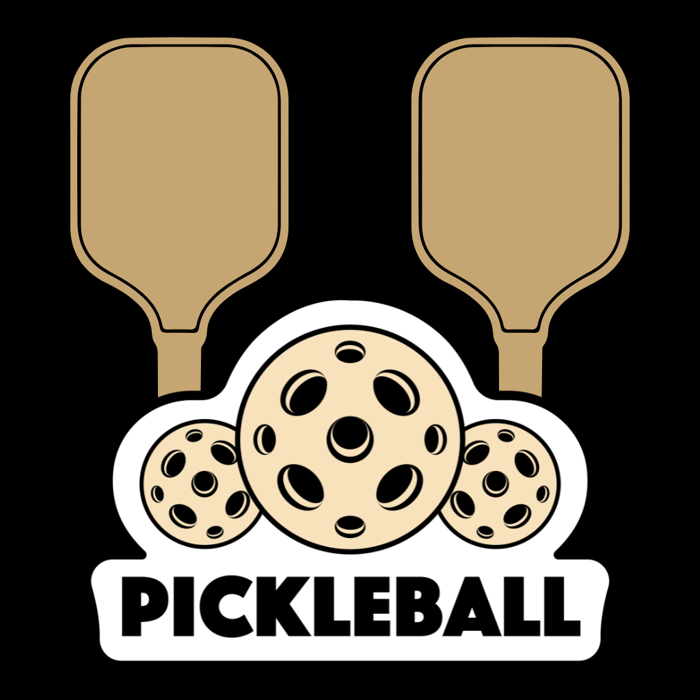
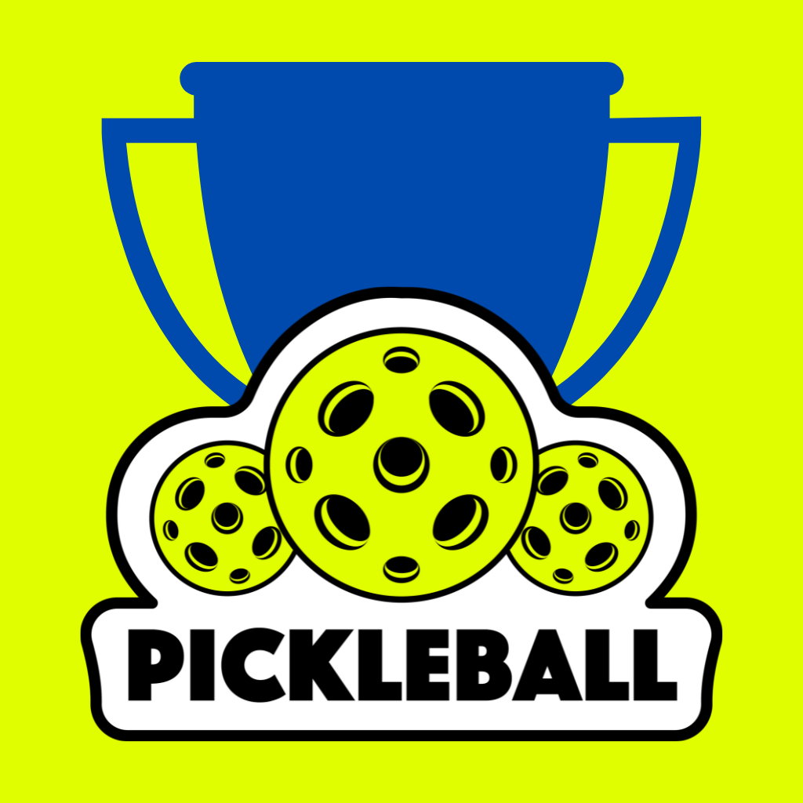

How do I create a match?
Open PaddleUp, choose Play Today or Play Tomorrow, select your time window, choose open or private, and tap Find Players.
Support
Choose the app below for common questions, troubleshooting, and the fastest way to get help.

PaddleUp
Open PaddleUp, choose Play Today or Play Tomorrow, select your time window, choose open or private, and tap Find Players.
Open matches are visible to players at the selected location. Private matches are only available to the players or groups you invite.
Yes. PaddleUp supports singles and doubles, and match creators can edit the match type when the game details allow it.
Check notification permissions in iOS Settings and confirm your Open Game Alerts and Private Game Invitations settings in the Profile tab. Alerts for games you join are intended to stay active.
Match creators can edit notes and match details. Once a game is ready, players can coordinate and update the official start time and court assignment.
Sign-in lets PaddleUp save your profile, match activity, groups, invitations, alerts, and location-specific game information.

Pickleball Tracker
Open Pickleball Tracker, enter the game details, add players, record the score, and save the match to your history.
Yes. Pickleball Tracker includes Apple Watch support so you can track games more conveniently while you play.
Pickleball Tracker stores match information on your device using Apple platform storage. See the privacy page for more details.
If you notice a mistake, open your match history and edit the saved details where available.
Email demandgendave@gmail.com and include the app name, your device model, iOS version, and a short description of what happened.
For PaddleUp support, please also include the location name and whether the issue involved an open match, private match, invite, alert, or profile photo.